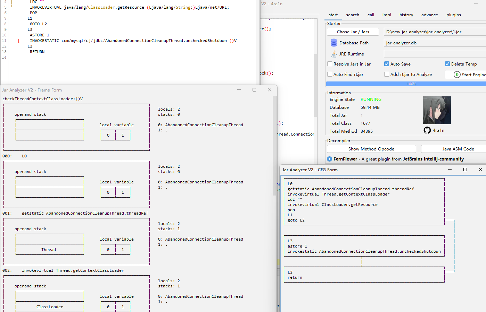

Get Started

Quickly
Quickly build a database and analyze any Jar you have
Convenient
Easy to get started, no need for too much experience to analyze
Great GUI
A simple GUI can help achieve the functions you need